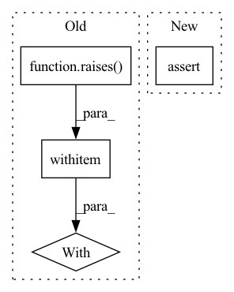

Pattern ID :38843
Before Change
with raises(AssertionError):
concat([])
with raises (ValueError):
concat(["a", 0])
def test_dmap():After Change
assert_correct(actual, ["a", "b", "c", "d"])
data = ["a", 0, (1, 2), {"1", "2"}]
assert concat(data) is data
with raises(AssertionError):
concat([])In pattern: SUPERPATTERN
Frequency: 6
Non-data size: 4
Instances Fragment ID: 110900044
Project Name: yura52/zero
Commit Name: ddaf7f284462cbc8bdcf60103f19d5a3cbf6f078
Time: 2020-06-09
Author: strausmg@gmail.com
File Name: zero/tests/test_map_concat.py
M Class Name: AnonimousClass
N Class Name: AnonimousClass
M Method Name: test_concat(0)
N Method Name: test_concat(0)
M Parent Class:
N Parent Class:
M File Name: zero/tests/test_map_concat.py
N File Name: zero/tests/test_map_concat.py
M Start Line: 57
M End Line: 60
N Start Line: 11
N End Line: 61
Before Change
def test_kmeans_parameter_error():
with raises (ValueError):
d = Doc("ali topu tut. oya ip atla. ahmet topu at.")
KMeansSummarizer().predict(d.sents)
After Change
def test_kmeans_parameter_error():
d = Doc("ali topu tut. oya ip atla. ahmet topu at.")
assert len(KMeansSummarizer().predict(d.sents)) == 3
Fragment ID: 110900045
Project Name: globalmaksimum/sadedegel
Commit Name: 2b7c0ce555fc77c224703f03ecc7469953e1913e
Time: 2020-08-15
Author: husnu.sensoy@globalmaksimum.com
File Name: tests/summarizer/test_cluster.py
M Class Name: AnonimousClass
N Class Name: AnonimousClass
M Method Name: test_kmeans_parameter_error(0)
N Method Name: test_kmeans_parameter_error(0)
M Parent Class:
N Parent Class:
M File Name: tests/summarizer/test_cluster.py
N File Name: tests/summarizer/test_cluster.py
M Start Line: 28
M End Line: 31
N Start Line: 28
N End Line: 30
Before Change
// infinite iterators
stream = Stream(itertools.count())
with raises (ValueError):
stream.next_n()
n_epochs = 10
for epoch_size in range(1, n):
stream = Stream(itertools.count())After Change
stream = Stream(range(n))
n_items = n_epochs * epoch_size
actual = [list(stream.next_n(epoch_size)) for _ in range(n_epochs)]
assert n_items == sum(map(len, actual))
flat_correct = [x % n for x in range(sum(map(len, actual)))]
correct = [
flat_correct[i * epoch_size : (i + 1) * epoch_size] for i in range(n_epochs) Fragment ID: 110900047
Project Name: yura52/zero
Commit Name: 84ec23fc998846fee71c08c3e15818bac120421e
Time: 2022-08-09
Author: strausmg@gmail.com
File Name: delu/tests/test_stream.py
M Class Name: AnonimousClass
N Class Name: AnonimousClass
M Method Name: test_next_n(1)
N Method Name: test_next_n(1)
M Parent Class:
N Parent Class:
M File Name: delu/tests/test_stream.py
N File Name: delu/tests/test_stream.py
M Start Line: 82
M End Line: 121
N Start Line: 65
N End Line: 76
Before Change
def test_kmeans_parameter_error():
with raises (ValueError):
d = Doc("ali topu tut. oya ip atla. ahmet topu at.")
KMeansSummarizer().predict(d.sents)
After Change
def test_kmeans_parameter_error():
d = Doc("ali topu tut. oya ip atla. ahmet topu at.")
assert len(KMeansSummarizer().predict(d.sents)) == 3
Fragment ID: 110900049
Project Name: globalmaksimum/sadedegel
Commit Name: 633f094a7bf937cccb5bae3e69f9dcde785870ca
Time: 2020-08-15
Author: husnu.sensoy@globalmaksimum.com
File Name: tests/summarizer/test_cluster.py
M Class Name: AnonimousClass
N Class Name: AnonimousClass
M Method Name: test_kmeans_parameter_error(0)
N Method Name: test_kmeans_parameter_error(0)
M Parent Class:
N Parent Class:
M File Name: tests/summarizer/test_cluster.py
N File Name: tests/summarizer/test_cluster.py
M Start Line: 28
M End Line: 31
N Start Line: 28
N End Line: 30